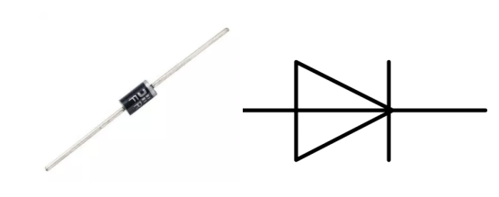

Note
Bonjour et bienvenue dans la communauté des passionnés de Raspberry Pi, Arduino et ESP32 de SunFounder sur Facebook ! Plongez plus profondément dans l’univers du Raspberry Pi, de l’Arduino et de l’ESP32 avec d’autres passionnés.
Pourquoi nous rejoindre ?
Support d’experts : Résolvez les problèmes post-vente et les défis techniques avec l’aide de notre communauté et de notre équipe.
Apprendre & Partager : Échangez des conseils et des tutoriels pour développer vos compétences.
Aperçus exclusifs : Bénéficiez d’un accès anticipé aux annonces de nouveaux produits et aux avant-premières.
Réductions spéciales : Profitez de remises exclusives sur nos derniers produits.
Promotions festives et concours : Participez à des concours et à des promotions spéciales pendant les fêtes.
👉 Prêt à explorer et à créer avec nous ? Cliquez sur [Ici] et rejoignez-nous dès aujourd’hui !
1.3.4 Relais
Introduction
Dans cette leçon, nous allons apprendre à utiliser un relais. C’est l’un des composants les plus couramment utilisés dans les systèmes de contrôle automatique. Lorsque la tension, le courant, la température ou la pression atteignent, dépassent ou sont inférieurs à la valeur prédéterminée, le relais connecte ou interrompt le circuit pour contrôler et protéger l’équipement.
Composants

Principe
Diode
Une diode est un composant électronique à deux bornes permettant le passage du courant dans une seule direction. Elle offre une faible résistance dans le sens du courant et une haute résistance dans le sens opposé. Les diodes sont principalement utilisées pour protéger les composants contre les dommages, notamment en raison de la force électromotrice dans les circuits polarisés.
Les deux bornes d’une diode sont polarisées : l’extrémité positive est appelée l’anode et l’extrémité négative est appelée la cathode. La cathode est généralement identifiée par une bande argentée ou colorée. Le courant dans une diode circule de l’anode vers la cathode, et son comportement est similaire à celui d’un clapet anti-retour. Une caractéristique importante de la diode est sa courbe courant-tension non linéaire. Si une tension plus élevée est appliquée à l’anode, le courant circule de l’anode vers la cathode (polarisation directe). Cependant, si une tension plus élevée est appliquée à la cathode, la diode ne conduit pas (polarisation inverse).
Relais
Un relais est un dispositif permettant de créer une connexion entre deux ou plusieurs points en réponse au signal d’entrée appliqué. En d’autres termes, les relais assurent l’isolation entre le contrôleur et l’appareil, car les dispositifs peuvent fonctionner en courant alternatif (AC) ou en courant continu (DC). Cependant, ils reçoivent des signaux d’un microcontrôleur qui fonctionne en courant continu, nécessitant ainsi un relais pour établir la connexion. Les relais sont extrêmement utiles lorsque vous devez contrôler un courant ou une tension élevés avec un faible signal électrique.
Un relais se compose de 5 éléments principaux :
Électroaimant : constitué d’un noyau de fer entouré de fils. Lorsqu’il est traversé
par un courant, il devient magnétique.
Armature : bande magnétique mobile qui réagit au champ magnétique créé par
l’électroaimant pour activer ou désactiver les points normalement ouverts (N/O) ou normalement fermés (N/C).
Ressort : lorsqu’aucun courant ne circule dans la bobine, le ressort éloigne
l’armature, ouvrant ainsi le circuit.
Ensemble de contacts électriques : il existe deux types de points de contact :
Normalement ouvert (N/O) : connecté lorsque le relais est activé, et déconnecté
lorsqu’il est inactif.
Normalement fermé (N/C) : déconnecté lorsque le relais est activé, et connecté
lorsqu’il est inactif.
Boîtier moulé : protection en plastique couvrant le relais.
Fonctionnement d’un relais
Le principe de fonctionnement d’un relais est simple. Lorsque l’alimentation est fournie au relais, le courant commence à circuler dans la bobine de commande, ce qui active l’électroaimant. L’armature est alors attirée vers la bobine, rapprochant les contacts mobiles des contacts normalement ouverts, fermant ainsi le circuit de charge. Lors de la coupure de l’alimentation, les contacts mobiles se détachent et retournent à leur position initiale grâce à la force du ressort, ouvrant le circuit. Ainsi, le relais permet de contrôler l’état d’un circuit de charge en commutant les contacts.

Schéma de câblage

Procédures expérimentales
Étape 1 : Construisez le circuit.

Étape 2 : Ouvrez le fichier de code.
cd ~/davinci-kit-for-raspberry-pi/c/1.3.4
Étape 3 : Compilez le code.
gcc 1.3.4_Relay.c -lwiringPi
Étape 4 : Exécutez le fichier exécutable.
sudo ./a.out
Une fois le code exécuté, la LED s’allumera. De plus, vous entendrez un bruit de tic-tac causé par l’ouverture du contact normalement fermé et la fermeture du contact normalement ouvert.
Note
Si cela ne fonctionne pas après l’exécution ou s’il y a un message d’erreur : "wiringPi.h: No such file or directory", veuillez consulter C code is not working?.
Code
#include <wiringPi.h>
#include <stdio.h>
#define RelayPin 0
int main(void){
if(wiringPiSetup() == -1){ //Si l'initialisation de wiringPi échoue, affichez un message à l'écran
printf("setup wiringPi failed !");
return 1;
}
pinMode(RelayPin, OUTPUT); //définir GPIO17(GPIO0) comme sortie
while(1){
// Tic
printf("Relay Open......\n");
delay(100);
digitalWrite(RelayPin, LOW);
delay(1000);
// Tac
printf("......Relay Close\n");
delay(100);
digitalWrite(RelayPin, HIGH);
delay(1000);
}
return 0;
}
Explication du code
digitalWrite(RelayPin, LOW);
Définit le port d’E/S à un niveau bas (0V), de sorte que le transistor n’est pas alimenté et la bobine n’est pas activée. Il n’y a donc pas de force électromagnétique, le relais s’ouvre et la LED reste éteinte.
digitalWrite(RelayPin, HIGH);
Définit le port d’E/S à un niveau haut (5V) pour activer le transistor. La bobine du relais est alimentée, générant ainsi une force électromagnétique, et le relais se ferme, allumant la LED.